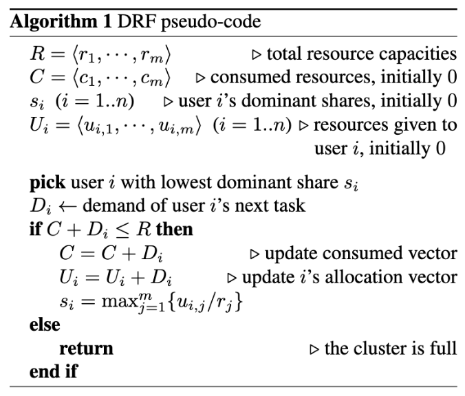
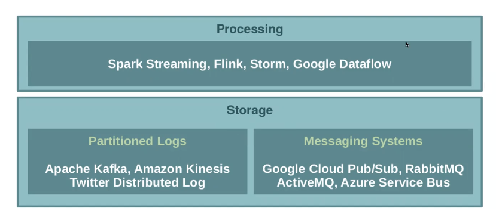
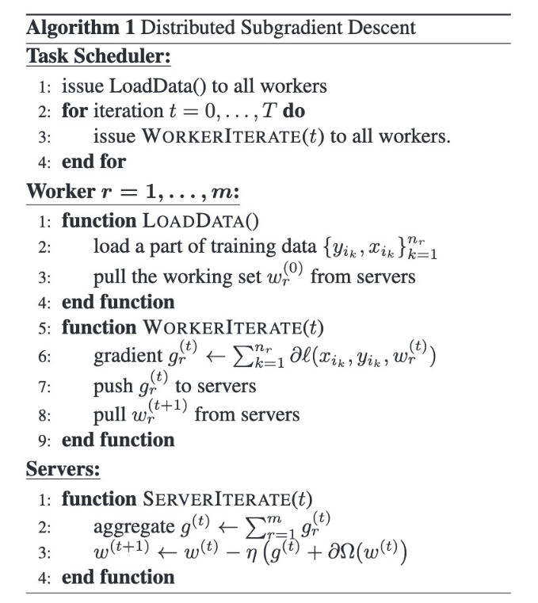
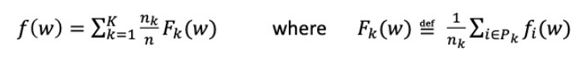

CS449 notes
0603 updated: https://juejin.cn/post/6844903553727725582
Lec 1 Introduction
Scale and Hyperscale
The ability of an architecture to scale appropriately as increased demand is added to the system. For a datacenter, scaling means increasing computing ability, memory, networking infrastructure, storage resources.
Scaling up and scaling out
Scaling up: More power & resources is added to existing machines, scaling vertically. Constant time as resources increase in propotion to increasing data size.
Scaling out: Adding more machines to spread out the load, taking advantage of the cumulative capacity of shared resources. Scaling horizontally.
Speed-up: Proportionally less time as resources increase for a given amount of data.
Data-intensive applications
Characterized by the fact that they manipulate huge volume of data, potentially complex, changing, increasing, unable to be handled by a single computer and fit in memory.
Reliability
Byzantine failures: Failures that are caused by arbitrary behaviour of some system component and there is imperfect information on whether a component has failed.
Redundancy: Achieve system reliability. Backups, checkpointing, RAID, RDD lineage, etc.
Scalability
Measure performance: Latency, response time, average versus percentiles (e.g. 95th), etc. Tail-latency: A small percentage of responses of a service that takes more time that usual. It still may slow down the entire computation.
Clouds
Elasticity: The ability to automatically adapt the employed resources to varying workload. The typical infrastructure choice for elastic systems is Cloud computing.
Lec 2 Distributed systems
Definition
A system with multiple components (potentially heterogeneous) located on different machines that communicate and coordinate actions in order to appear as a single coherent system to the user. Resources of several machines are aggregated, the system is more scalable, faster, and reliable, more complex (no global clock, unpredictable failures of components, highly variable bandwidth, large latency …).
Properties
Robustness
Availability: Are services and data always available to clients?
Scalability
Transparency: Be perceived as a whole system rather than a collection: https://superuser.com/questions/1263299/what-is-transparency-in-distributed-systems-in-simple-words
Concurrency
Security
Efficiency
Centralized architecture (client-server)
One entity (the server) has a global view of the system. Example: Web. Simple, easier to control. Not reliable, lack of scalability.
Fully distributed architecture (P2P)
-
All participating entities (nodes) are both clients and servers and contribute the the system they use. There is no central node that has global knowledge of the system.
-
The core: Overlay Networks: a virtual network abstraction specifying the topology of the P2P system and implemented on top of a physical network. Logical or virtual link between nodes corresponds to a path, perhaps through many physical links.
-
Single point of failure (SPOF) is a part system that if it fails, will stop the entire system from working.
-
Topology:
- centralized: Every node is connected to other nodes, as well as a central sever
- fully connected: No central entity
- hybrid
- Structured P2P. DHT-Based: Topology strictly determined by node IDs. Not all nodes have complete knowledge of all nodes.
-
Distibuted Hash Table:
- Autonomy and decentralization
- Fault tolerance
- Scalability Each of nodes maintains a set of links (O(log n)) to other nodes. The stucture of a DHT includes keyspace, keyspace partitioning scheme, overlay network.
The identifier of a node is its ID (for instance, a SHA1 hash of the IP). Each object is assigned a 160-bit long identifier (key). Each node is responsible for a range of keys by specific algorithm.
-
Self-organization
-
Pastry:
-
Each node is assigned a 128-bit long identifier. Place the node and the objects in a ring uniformly at random.
-
Each object is associated to the node whose identifier is the closest to the object identifier.
-
Despite concurrent node failures, eventual delivery is guaranteed unless [L/2] nodes with adjacent nodeIds fail simultaneously.
-
Routing
- In each routing step, a node normally forwards the message to a node whose nodeId shares with the key a prefix that is at least one digit longer than the prefix that the key shares with the present node’s id.
- Routing table: route(key, msg)
- routeTable(i, l): nodeId matching the current node identifier up to level i, with the next digit l (-rest of nodeIds)
- Lazily repaired
- Leaf set: 8 or 16 closest numerical neighbors in the naming space. Closest larger and smaller nodeIds. Leaf set is aggressively monitored and fixed.
- Neighborhood Set: contains the nodeIds and IP addresses of the M nodes that are closest to the local node (according to the proximity metric).
- Algorithm on node A:
IF (D i s wihin range of leaf set) DONE ELSE check in the routing table IF (there is entry in the routing table, which shares the longer prefix with D than current node) msg is forwarded to that node ELSE msg is forwarded to a node hsaring a prefix with the key at least as long as the local node, and is numerically closer to the key.This procedure always converges.
-
Initialization of the routing table
- You have a node A to start from, which is already part of the system. The new nodeId is X. X asks A to route a special “join” message with the key equal to X, and Pastry routes the join message to the existing node Z whose id is numerically closest to X. All nodes along this path from A to Z send their state table to X. X inspects this information and initializes its own state tables, then informs any nodes that need to be aware of its arrival.
- A is assumed to be in proximity to the new node X, A’s neighborhood set to initialize X’s neighborhood set. Z has the closest existing nodeId to X, thus its leaf set is the basis for X’s leaf set.
- Consider the condition where A and X share no common prefix. Then row 0 of A’s routing table (A0) contains the appropriate value for X0, row 1 of B’s (B is the first node encountered from A to Z) routing table is appropriate for X1, C2 is appropriate entries for X2, and so on.
- Total cost is $O(log_{2^b}N)$
-
Departure
- Failure or explicit departure
- Nodes may fail or depart without warning. The failure of a node can be detected by another node that attempts to contact it during routing and there is no response. This may not affect the routing of a message, but a replacement entry must be found to preserve the routing table.
- A node attempts to contact each member of the neighborhood set periodically to see if it is still alive.
-
Locolity: Reducing latency
- Filling the routing table whenever possible with nodes that are close geographically and satisfying the constraints of the routing table. (Populating the routing table)
-
Lec 3 Cloud Computing
Characteristics
On-demand service
Ubiquitous network access
Location transparent resource polling
Rapid Elasticity
Measured service with pay per use
(Massive scal; Data-intensive; New programming paradigms…)
Flavours
Hardware as a service: your own cluster
Infrastructure as a service: flexible computing and storage infrastructure in the cloud. IaaS is fully self-service for accessing and monitoring computers, networking, storage, and other services. https://avinetworks.com/glossary/infrastructure-as-a-service-iaas/
Platform as a service: provide cloud components to certain software while being used mainly for applications. All servers, storage, and networking can be managed by the enterprise or a third-party provider while the developers can maintain management of the applications.
Software as a service: SaaS utilizes the internet to deliver applications, which are managed by a third-party vendor, to its users.
MapReduce
batch computing
-
Mapper
- Each mapper takes fraction of input (distibuted file system)
- UDF
- Output: key/value pair (local file system)
-
Shuffling *
-
Reducer
- Fetch files from every mapper and merge
- UDF
- Operate on all intermediate values associated with the same intermediate key
Lec4 Gossip-based computing
Multicast/Group communication
A node of a distributed system wants to send a message to a group of other nodes in the system.
Problems:
- the latency of the message delivery
- the load balancing among nodes
- the resilience to failure
Multicast Topology
- Centralized
- fastest
- severe unbalance
- Tree-based (spanning tree)
- load is relatively evenly balanced
- fragile structure where the failure of the parent node will lead to the entire subtree failure
- tree maintaince
- Chain-based
- worst latency
- bset load balancing
- extremely fragile
Gossip-based dissemination
Each node spreads a message to a sample of other nodes randomly (e.g. f (fanout) out of n members of the group). Each node reveiving a msg for the first time forwards it to f nodes chosen uniformly at random among n. Zr is the number of infected nodes prior to round r.
-
Two approaches: Anti-entropy/gossip
-
atomic “infection”: p(Zr = n) = p(everyone gets a msg) = $e^{-e^{-c}}$ if f = log(n)+c. The broadcast is achieved in O(log(n)) hops. http://se.inf.ethz.ch/people/eugster/papers/gossips2.pdf
-
Pros&Cons
- simplicity, emergent structure, convergence, robustness from replication
- overhead, hard to cope with malicious behavior
-
Propagating information ways
- Push: once you have a multicase message, start gossping
- Pull: Periodically pull a few randomly selected nodes for new msg
- Hybrid: First push, last pull
-
The peer sampling service
Based on https://infoscience.epfl.ch/record/109297/files/all.pdf
- An n node system; Each node (identified by IP) may join/leave/fail at any time;
- Each node maintains a local view of c neighbors [IP, freshness];
- Each node runs a passive (reactive) and an active(proactive) thread.
- Node selection => create an overlay network
- Periodically each node selects another node as its peer according to a function
peerSelect(). The sender exchange membership information with it. - Strategies: Rand/Head/Tail
- Periodically each node selects another node as its peer according to a function
- Data exchange
viewPropagation()function decides how nodes exchange their membership information, whether push/pull/push-pullviewselection(c, buffer)how view selection is performed. Select the information to exchange during the gossip operation.buffer(h)[nodeIP, age] of neighbors and self. (Ignore the oldest h, c/2 first entries of the local view…)
- Data processing
- Once a node receives a buffer, the buffer is appended to its local view
- Which entries and how many entries to be removed (h oldest) and kept (freshest)
- s first items are removed: minimizing the correlation between the local views of the nodes
- Random nodes may be removed
- Strategies are determined by h (healer) and s(shuffle): random/healer/shuffle…
-
Existing gossip-based membership system
- Lpbcast/Newscast/Cyclon
Lec7 Consistency models and protocols
https://hellokangning.github.io/post/consistency-in-distributed-system/
Most time and energy cost in computing is due to data movement
- Temporal locality and spatial locality
- Locality can be exploited by: caching the data/prefetching/sequential access/patrtitioning the data among nodes. Some data structure are more appropriate than others to exploit locality
- Partitioning is not applicable everywhere, e.g. graph (the smaller the cut, the better. Random graphs is resilient to parition)
- Consistency model describes the consistency contract between an application and a storage system. We need conistency model because there is data replicated.
- Schedules: serial schedule/equivalent schedule/serializable schedule…https://www.geeksforgeeks.org/types-of-schedules-in-dbms/
Strict consistency
- Any read on a data item X returns a value corresponding to the result of the most recent write on X.
Strong consistency(Linearizability, Sequential consistency)
- A write to a variable does not have to be seen instantaneously, but must be in some sequential order. All memory operations need to happen in the program order
- May produce non-deterministic results
- Impossible to achieve in the presence of a partition (CAP), in an asynchronous system without assumptions on message delivery latencies (if I don’t reveice response of one node for some time, I assume it has failed)
Causal consistency
- There are constraints only for causally related events. Only write operations that are causally related need to be seen in the same order by all processes
- Monotonic reads consistency: Successive operation by the same process will return the same value, or more recent value.
- Monotonic writes consistency: Any write happens before other writes on the same variable by the same processor can be seen by same processor
- Read your writes: The effect of a write operation by a process on data x will be seen by successive read operation on x by the same process
- Writes follow reads
Eventual consistency
- Lack of simultaneous updates
- If no update takes a very long time, all replicas eventually become consistent
Newer consistency models
-
Per-key sequential
-
CRDT: Data structures for which commutated wrties give same result
-
A Protocol model describes the implementations of a consistency model
Primary-based protocols: centralized
- A primary server is responsible for every write operation
- single point of failure
- Write operation take place on the primary replica
- Primary server is more loaded than others
Replicated write protocols
- Write operation can be done on multiple replicas
- They need to obey some ordering
- Updates are sent to each replica in the form of an operation in order to be executed. All updates need to be performed in the same order in all replicas
- Operation order can be managed by a totally-order multicast protocol (Lamport Timestamps) or a central coordinator
Optimistic reconciliation protocols
- Perform on data without synchronization and hope for the best
- Manage consistency a posteriori
Quorum-based protocols
- Quorum: a number of nodes (>50%) that contain replicas of a given key-value pair.
- Each client should acquire the permission of multiple servers before reading or writing a replicated data.
- N: total replicas; R: read quorum; W: write quorum;
- Constraint: 1. R+W>N 2. W>N/2: Precluding concurrent write or write/read of two quorums
- After the agreement, changes are applied on the file and a new version number is assigned to the updated file
- Constraint 1 guarantees that a replica will not be read and written at the same time. Constraint 2 guarantees that a replica will no be written by 2 process at the same time.
- (W=N, R=1) is good for read-heavy workloads. (W=1, R=N)/(w=N/2+1, R=N/2+1)
Consensus
-
Consensus problem: N processes outputs 0 or 1. How to design a protocol so that at the end, all variables output are 0 or 1). Goal: to have all processes decide same value
-
Constraint: Validity/Integrity/Non-triviality
-
FLP: It is impossible to differentiate a failed process with a slow one in an asynchronous distributed system.
-
Synchronous/Asynchronous distributed system:
- Each message is received within bounded time/ No bounds
- Drift of each process’ local clock has a known bound/ Arbitrary
- Each step in a process takes lb < time < ub/ No bounds on message transmission delays
-
In synchronous system, consensus is solvable. In the asynchronous system model, it is not possible. But in practice, it is possible
-
Paxos:
https://www.microsoft.com/en-us/research/uploads/prod/2016/12/paxos-simple-Copy.pdf
- safety thanks to the notion of majority, no two different values will be decided
- eventual liveness there will be eventually a unique leader able to decide
- Each round has a unique ballot id. Rounds are synchronous.
- If you are in round j and hear a message from round j+1, abort everything and move over to round j+1
- Each round itself broken into 3 phases: Leader selection -> Leader proposes a value, processes ack -> Leader multicasts final value
Lec5 & Lec6 NoSQL
Three database revolutions
- Navigational model
- Relational model SQL
- Logical data is disconneted from physical information storage
- Transactions: sequence of operations
- Users submit transactions, and can think of each transaction as executing by itself, no other users.
- Each transaction must leave the system in consistent state. Concurrency is achieved by the DBMS, interleaving actions of various transactions
- NoSQL: large-scale dynamic distributed workload
ACID guarantees
- Atomicity: all included statements in a trasaction are either executed or the whole transaction is aborted without affecting the database
- Consistency: a database is in a consistent state before and after a transaction
- Isolation: transactions can not see uncommited changes in the database
- Durability: Changes are written to the disk before a database commits a transaction, so that committed data will not be lost through power failure
CAP Theorem
In a distributed system, you can not achieve these properties simultaneously, but at most two
- Consistency: all users have the same view of the data
- Availability: read/write reliably and quickly. To improve the availability, store data in more than one site or node
- Partition-tolerence: still function normally during network partition.
Network partition is essential. Traditional RDBMS favors consistency while NoSQL favors availability
BASE properties
- Basic Availability
- Soft-state: Copies of data may be inconsistent
- Eventually consistent
Key-value data model (KVS)
- A collection of key/value pairs
- Distributed dictionary data structure, supporting insert, lookup and delete
- Column-oriented storage: store and process by column, keeping all the data associated with a field next to each other in memory. Range searches are fast. https://dataschool.com/data-modeling-101/row-vs-column-oriented-databases/
- Tables: “Column families” in Cassandra, “Table” in HBase, “collection” in MongoDB…but unstructured, no schema, no foreign key.
Graph data model
Cassandra
https://www.cs.cornell.edu/projects/ladis2009/papers/lakshman-ladis2009.pdf
https://medium.com/jorgeacetozi/cassandra-architecture-and-write-path-anatomy-51e339bcfe0c <- Super clear!
https://cassandra.apache.org/doc/latest/architecture/storage_engine.html <- Memtable and SSTable
Distributed storage system, large amount of structured data, no singel point of failure.
- CAP: Availability and partition tolerance
- Columnbased NoSQL database, but the lowest level for key-value pairs is row
- Different consistency levels
- API: insert(table, key, row_mutation), get(table, key, columnName), delete(table, key, columnName)
- Data model:
- Table: a distributed multi dimensional map indexed by a key
- Row: associated to a unique key
- Every operation under a single row key is atomic per replica
- Column: smallest data unit in Cassandra: name-value-timestamp
- Supercolumn: column within a column
- Column families: columns are grouped together into sets called column families. There are super column families and simple column families
- Any column within a column family is accessed by “column_familiy -> column” and any column within a super column family can be accessed by “column_family -> super_column -> column”
- Keyspace: A namespace defines data replication on nodes. A cluster contains one keyspace per node
Cassandra Architecture
-
Partitioning
- All nodes participate in a cluster. They do not share anything
- Consistent hashing, typically MD5-128: Each node is assigned a random value which represents its position on the ring. Each data identified by a key is also hashed to a position of the ring, and then assigned to a node by their position (chord-like). To address heterogeneity, load information is analyzed, have lightly loaded nodes move on the ring to alleviate heavily loaded nodes, or use virtual nodes. This node is in charge of this key
- Departure or arrival affect only immediate neighbors
- Each node is aware of every other node in the system
- Partitioner: determines how data is distributed across the nodes in the cluster.
-
Replication
- Each data item is replicated at N hosts, where N is the replication parameter. This achieves high-availability. The node stores keys that fall within its range, and also replicates these keys at the N-1 nodes in the ring.
- Cassandra system elects a leader among its nodes using Zookeeper (Paxos variant). The leader tells all the nodes on joining the cluster what ranges they are replicas for and makes a concerted effort to maintain the invariant that no node is responsible for more than N-1 ranges in the ring
- Ranges a node is responsible for is cached locally at each node and in a fault-tolerant manner inside Zookeeper
- Replication strategies: Simple Strategy vs Network Topology
- Simple Strategy: RandomPartitioner assigns in a chord-like manner (clockwisely choosing next N-1 nodes to act as replicas), ByteOrderedPartitioner ranges of keys to servers
- Network Topology Strategy: for multi-datacenter deployments
-
Write
-
Writes are atomic at row level
-
When a client sends request to a node, the node is the coordinator. Coordinatore uses partitioner (partition policy) to send query to one or all replica nodes responsible for key.
-
When x replicas respond, the coordinator returns an acknowledgement to the client.
-
Hinted Handoff mechanism: If a replica is down, the coordinator writes to all other replicas, and keep the write locally until down replica comes back up. When all replicas are down, the coordinator buffers writes for up to a few hours, or throws OverloadedException
-
-
Read https://marikalam.medium.com/study-guide-cassandra-data-consistency-496e5bf9cadb https://docs.datastax.com/en/cassandra-oss/3.0/cassandra/dml/dmlAboutReads.html
- The coordinator sends request to replicas, waits for enough responses and return the latest value to the client
- At a replica, check memtable-> row cache-> bloom filter-> partition key cache-> compression offset map/partition summary.
- Consistency is checked. Once a read is done, the coordinator compares the data from all remaining replicas for the given key. If they are consistent, the coordinator sends a write request to the out of date replica to update the row to most recently value.
- Maybe slower than write but still fast
-
Delete
- No item deletion right away. Add a tombstone to the log, and will be deleted at the point when compaction recognize this
-
One ring per datacenter, one per-DC coordinator is elected to coordinate with other DCs.
Cassandra Data Structures
- Partitioning key
- It helps with determining which node in the cluster the data should be stored
- Commit log
- The write request is appended to the commit log in the disk
- Memtable
- A write-back cache. Cassandra looks up by key
- The write request is sent to the memtable (in memory)
- When the global memory threshold has been reached or commit log is full, the data is flushed to a SSTable on disk (sequential writes), and the data in the commit log is purged, memtable is marked as flushed.
- Can be searched by key
- Append-only datastructure
- SSTables-Sorted String Table
- Index structure called bloom filter: https://llimllib.github.io/bloomfilter-tutorial/
- Compact way of representing a set of items, checking for existence in set is cheap
- A propabilistic data structure. Maybe false positive, never false negative
- Compaction
- merging all the updates associated to a given key periodically (multiple SSTables into one SSTable). Latest timestamp wins
- Index structure called bloom filter: https://llimllib.github.io/bloomfilter-tutorial/
- Row cache
- A memory cache which stores recently read rows (records)
- Partition indexes
- sorted partition keys mapped to their SSTable offsets. Partition Indexes are created as part of the SSTable creation and resides on the disk.
Membership – Gossip based
- Anti-entropy gossip based mechanism
- Full membership, everyone knows each other.
- Any server in cluster could be the coordinator. Every server needs to maintain a list of all the other servers.
- Nodes keep a heartbeat count for each member and periodically gossip their membership list to neighbours, and then update it: Consistency of node network.
- Failure detection:
- A mechanism by which a node can locally determine if any other node in the system is up or down. In Cassandra, also used to avoid attempts to communicate with unreachable nodes.
- A modified version of the $\Theta$ Accrual Failure Detector: emits a value indicating the suspicion level whether the monitored node is down. PHI determines the detection timeout.
- Adaptively set the timeout based on underlying network, historical inter-arrival time and failure behavior
Consistency
ANY (fastest) / ALL (strong consistency) / ONE / QUORUM (global)
Bootstrapping
Lec8 Scheduling
Framework and scheduler
Collections of anything from development tools to middleware to database services that manages and runs multiple cloud applications. No single framework is optimal for all applications, and it’s difficult to run each framework on its dedicated cluster.
Goal of scheduling: 1. Good throughput or response time for tasks/jobs; 2. High utilization of resources. + Computing scheduling: Running multiple framework on a single cluster
Single-core scheduling
- FIFO: average completion time may be high.
- STF: Optimal solution wrt average completion time. Not fairest
- Round-Robin: Requires to preempt processes at the end of each period and save their state to resume them later.
- …
FIFO and STF are better for batch applications, while Round-Robin is better for interactive applications.
Mesos
https://zhuanlan.zhihu.com/p/21408890 Mesos acts as an intermediary between the nodes and the framework, to accomodate multiple frameworks. It decouples the resource allocation and the task scheduling, but not takes all the requirement and resource as input to give global optimal scheduling.
- Global scheduler: can achieve optimal but too complex and to handle future new framework
- Distributed scheduler: Master sends resource offers to frameworks: vector of available resources (e.g. 1CPU; 1GB). Frameworks select which offers to accept and which tasks to run
- Mesos architecture
- Mesos master
- Mesos slave: executor
- Zookeeper: elect master
- Frameworks: Scheduler + Executor
- Master knows where the slaves are and what resources the slave have. Slaves continuously send status updates about resources to the master.
- Two level scheduling: Master sends resource offer to the scheduler of the framework (framework send their requirement to the master also). The framework scheduler selects resources and provides tasks. The executors of the framework launch tasks.
- Highly scalable, easy to customize, small Mesos Codebase
Resource allocation
- Max-min (weighted) fairness: first allocate average, then if a user wants less than its fair share he will get less
- Users have no reason to lie to ask for more resources.
- For multiple cores: Dominant Resource Fairness
- Equalize dominant shares
- 
Lec9 Stream Processing

Problem
Disseminate streams of events from various producers to various consumers. Data stream is unbounded data, broken into a sequence of individual tuples.
Messaging System
-
Direct Messaging:
- Necessary in latency critical applications.
- Both consumers and producers have to be online at the same time
- Issues: comsumer can crash; Producers may send meesages faster than the consumers can process
-
Pub/sub system
- A set of Subscribers/consumers and Publishers/producers
- Pub-sub system: manages users subscripions, matches published events against subscriptions, disseminate events
- Expressiveness: Topic-based (application-level multicast)/Content-based (attributed-based; range queries)
- Publisher: generate event data and publishes them
- Subscriber: submit their subscriptions and process the events received
- P/S service: the mediator/broker that filters and routes events from publishers to interested subscribers
- Decoupling in time, space and synchronization
- Centralized architecture: one centralized broker, subscribers/publishers do not need to know each other
- Distributed architecture: a set of nodes act as brokers
- Decentralized architecture: each node can be pub/sub/broker, communicating directly, they should have knowledge of each other
Key function:
- Event Filtering & Event routing
- Topic based: Each event is published to one of the channels. Subscribers subscribe to a particular channel and receive all events published to the subscribed channel
- Event routing is heavily-loaded
- Content based: Allowing more expresson in the query. Event publication by a key/value attribute, and subscriptions specify filters using an explicit subscription language
- Topic based: Each event is published to one of the channels. Subscribers subscribe to a particular channel and receive all events published to the subscribed channel
Kafka
Partitioned log-based message broker, distributed stream processing software, topic oriented
- Partitioned log
- A log is an append-only sequence of records on disk, so ordered. But ordering is only guaranteed within a partition for a topic
- A producer sends message by appending it to the end of the log
- A consumer receives messages by reading the log sequentially, in the order the messages are sorted in the log.
- Messages in the log can be stored for a while
- Logs are partitioned hosted on different machines
- Each partition can be read and written independently of others
- Within each partition, the broker assigns a monotonically increasing sequence number (offset) to every message
- No ordering guarantee across partitions
- Partitioned logs can be replicated or not on different partition
- Partitions of a topic are replicated: fault-tolerent
- One broker is the leader of one partition. Read and write go through the leader
- Zookeeper manages consistency: 1) detecting the addition and the removal of brokers and consumers; 2) Keeping trak of the comsumed offset of each partition
- Followers passively replicate the leader for fault tolerance. Once a leader fails, one of the followers will assume the role of the leader
- State and guarantees
- Brokers have no metadata for consumers-producers
- Consumers are responsible for keeping track of offsets
- Messages in queues expire based on the pre-configured time periods
- Kafka guarantees that messages from a single partition are delivered to a consumer in order
- Kafka only guarantees at-least-once delivery (the client needs to check for duplicate)
Streaming Data
- Processing patterns
- Batch processing
- Micro-batch: set of bounded data from unbounded data
- Continuous procesing-based system
- Windowing
- Window is a buffer associated with an input port to retain previously received tuples
- Tumbling window: fixed length, every event belongs to excatly one window (no-overlapping), based on the happening time.
- Hopping window: fixed length, allowing overlap
- Sliding window: supports incremental operation, contains all events that occur within some interval and remove old events when they expire.
- Session window: No fixed duration. Grouping together all events from the same user that occur closely in time. Frequently used for web site analysis (e.g. the clicks of a user in some Web page)
- Windowing by processing time/event time (handling out-of-order events)
Streaming processing system
- Processing element (PE): A PE is the basic functional unit in an application: inputs tuples, applies a function, and outputs tuples
- A set of PEs and stream connections, organized into a data flow graph
- PE state:
- stateless tasks: do not maintain state, process each tuple independently of prior history: total parallelism, no synchronization
- stateful tasks: maintains information across different tuples to detect complex patterns
- At runtime, an application is represented by one or more jobs. Jobs are deployed as a collection of PEs.
- Logical plan vs. physical plan: Logical plan is a data flow graph, where the vertices correspond to PEs, and the edges to stream connections; Physical plan is a data flow graph where the vertices correspond to OS process, and the edges to transport connections
- Parallelization: pipelined/task/data
- How to allocate data items to computation instance: broadcast, shuffle, key-base…
Lec10 Distributed learning
Parameter server
To launch ML algorithms on a typical Cloud infrastructure, going beyond typical cluster-compute system
Parameters are stored in a distributed database (e.g. KVS) accesible through the network.
- Architecture
- Server nodes
- maintain a partition of the globally shared parameters
- communicate with each other to replicate or migrate parameters
- perform bookeeping and global aggregation steps
- Worker nodes
- perform computation
- store locally a portion of the training data
- communicate with server nodes to update and retrieve the shared parameters
- Server nodes
Distributed Gradient Descent
- Workers get the assigned training data
- Workers pull the working set of model
- Different parts of the model may be on different servers
- Iterate until Stop:
- Workers compute gradients
- Workers push gradients
- Servers aggregate into current model
- Workers pull updated model
- 
- Idealy, different workers follow the distribution of the data, as homogeneous as possible. But this will slow down the system
Shared parameters: key-value vectors
Model parameters are represented as key-value pairs (i, wi), but the semantics used by the server may be of vector or matrix. This enables to linear algebra operation and data locality.
Range Push and Pull
Caller of the push and pull are always the workers. Range of keys can minimize network traffic. Non blocking operations: the caller inserts its requests in a queue and resume computation
Asynchronous execution and Flexible consistency model
How to deal with inconsistency? Stale synchronous parallel (SSP)
- Bounded delay: x-bounded delay means the workerss (at time t) can tolerate which level out-of-date parameters (can’t be older thatn t-x). 1-bounded means sequential, infnity means fully asynchronous.
- Delayed SGD: trade-off between efficiency vs. synchronization
- Vector clocks: attached for each k-v pair for: tracking aggregation status, rejecting doubly sent data, recovery from failure….What is vector clock, Lamport timestamp
- As many k-v pairs get updated at the same time during one iteration, they can share the same clock stamps, which reduces the space requirement
- Consistent Hashing & Replication
- Use of DHT range partitioning
- Servers are hashed in the ring
- Server nodes store a replica of k-v pairs on k nodes counter clockwise to it.
Federated Learning
Let the data stays where it is produced. Model parameters will never contain more information than the raw training data. Instead of uploading the raw data, train a model locally and upload the model.
In practice:
- Each round, a random fraction C of clients are selected by the server. Each client that has $n_k$ training data samples in federated learning ~ a randomly selected sample in traditional learning (C=1 means full-batch gradient descent)
- The server sends model to clients, clients send updates to the server, the server aggregates, then sends back new parameters
- Suppose n samples; K clients; $n_k$ data samples on the client k; $\eta$ learning rate; central server broadcasts current model $w_t$ to the selected clients, then
- training objective: $min_{w}f(w)$
- 
- Each client k computed gradient: $g_k = \nabla F_k(w_t)$
- Depends on:
- Fraction of the clients
- Number of passes a client makes on its local data
- Local mini-batch size used for the client update